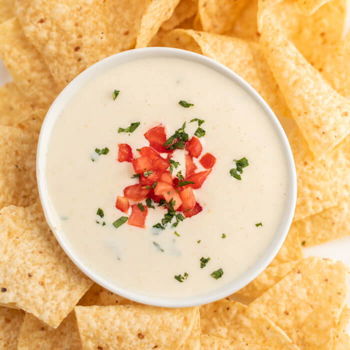

Cheese Dip

This is my favorite way to make a cheese dip for parties or any other event!
Ingredents
- A block of white cheese
- Rotel
- Sausage
- Bacon
- Milk
Steps
- Cube the cheese into small blocks
- Add cheese to a boiler
- Once the cheese starts to melt add the Rotel
- Brown Sausage and Bacon in a frying pan
- Cut cooked Sausage and Bacon into small chuncks
- add Milk if the dip is too thick